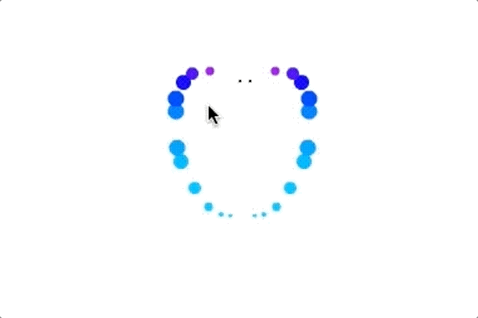
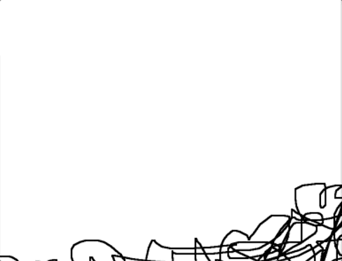

Making People Cards
what + why people cards
identity, asthetic, documentation

Why scratch
- can share something meaningful to you
- can express a clear aesthetic
- run into powerful ideas
- it's fun
Powerful idea
How to seem alive?
Meaningful
Animals
Meaningful
Bajan flag + El Chapo
Alec Aesthetic
tool, representing rule/idea, pretty
Shaunalynn Aesthetic
frame >> nails it.
Tyreq
Action
We'll make people cards that share
- our aesthetic,
- something we care about, or
- something we think is cool.